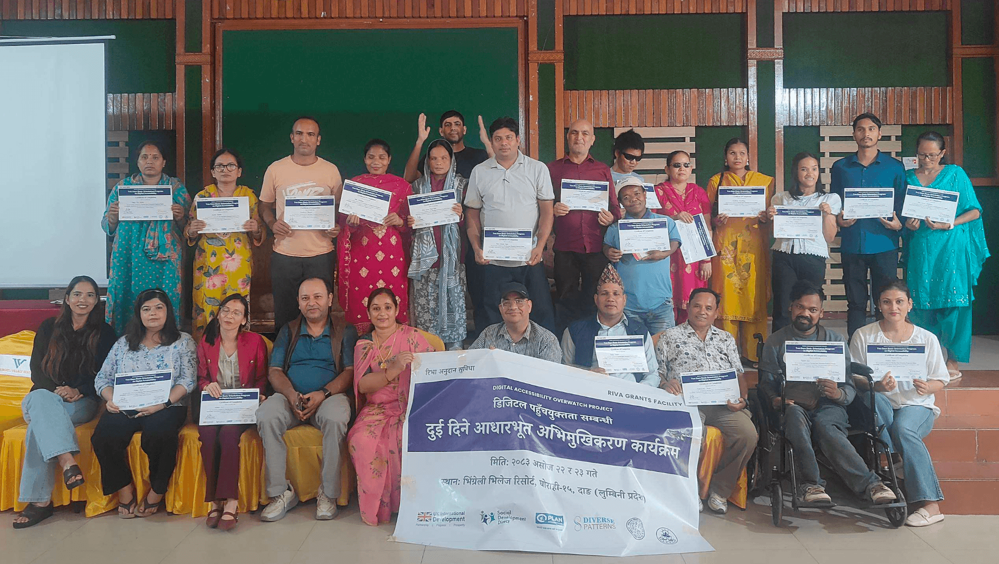

Our Work
Diverse Patterns Institute for Inclusion focuses on identifying real societal and institutional barriers, learning from lived experiences, and co-creating practical, community-owned solutions.
Our Four Main Focus Areas
We work with communities and organizations to promote inclusion, improve accessibility, and support the participation of persons with disabilities.
01. Inclusion and Accessibility
Identifying barriers and promoting accessible digital services, information, and public spaces.
02. Research and Learning
Learning from the experiences of persons with disabilities and documenting barriers to inclusion.
03. Knowledge and Resources
Creating simple, practical resources to help people understand and apply inclusion.
04. Collaboration and Awareness
Working with OPDs, communities, schools, and public institutions to promote inclusion.

Digital Accessibility Overwatch
Two-day digital accessibility orientation workshop
location_on Locations: Lumbini and Madhesh Provinces, Nepal
Through this project, persons with disabilities are learning the basics of digital accessibility and how to identify common barriers on websites and digital platforms.
checklist Key Activities
- check_circle Learning how people with different disabilities access digital information.
- check_circle Practicing basic, non-technical website accessibility checks.
- check_circle Developing a simple accessibility scorecard.
- check_circle Building skills to share findings and advocate for improvements.
How We Approach Every Initiative
We believe meaningful change begins when we listen openly, work side by side with communities, and learn from lived experiences.
Direct Participation
Persons with disabilities lead our research, activities, and decision-making rather than being treated as passive recipients of aid.
Community Partnership
We build genuine, trusting relationships with local disability-led groups, families, and educational organizations to understand grassroots challenges firsthand.
Open & Accessible Knowledge
All of our findings, tools, and guidelines are freely shared with the public so anyone can use them to foster inclusion.
Interested in Collaborating with Us?
Whether you represent an organization, work in education or research, or simply want to support inclusion, we welcome your ideas and partnership.